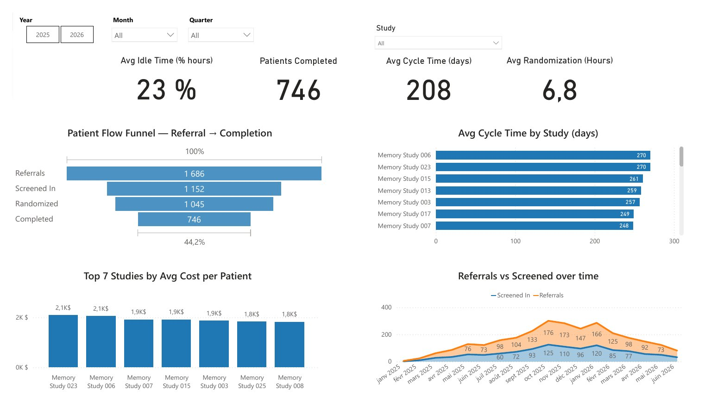
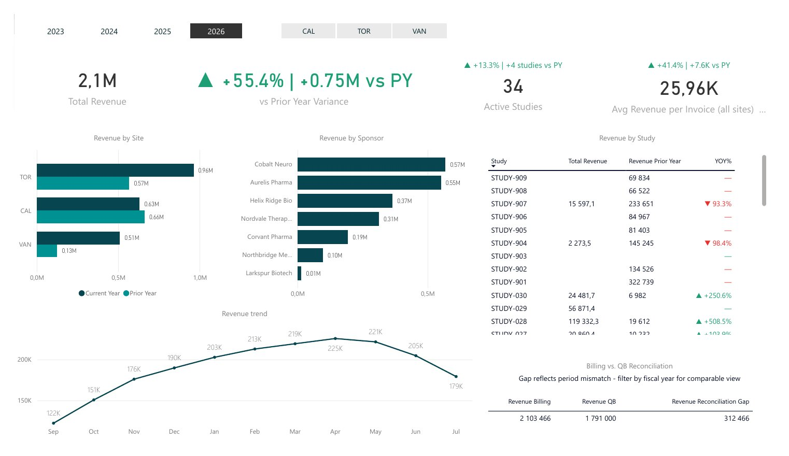

Two dashboards, plus the two pieces of work behind them that changed how the company handles its data.

Power BI · In daily use
Clinical operations and cost per patient
Before this dashboard, the clinic compiled its statistics by hand, after the fact. Nobody could see what a patient cost while a study was running.
It now follows every patient from referral to completion and puts a cost on each step. Leadership uses it to renegotiate sponsor budgets, decide which studies to take on, time new hires and rework the randomization step.
My favorite part to explain is a bug I first misread. A card disagreed with a chart and I blamed the visual. The real cause was which date relationship was filtering the table. The README walks through it.
Power BIDAXStar schemaWhat-if simulationTMDL
Model, DAX and write-up on GitHub

Power BI · Nightly refresh from QuickBooks
Financial dashboard on QuickBooks data
Revenue by clinic, sponsor and study, gross margin, expenses, net income, EBITDA and the balance sheet, all on a September to August fiscal year.
QuickBooks exports are made for printing, so most of the work is in Power Query: filling account names down, dropping totals, matching one sponsor spelled five different ways.
One design choice matters more than it looks: the margin-by-clinic chart says plainly that it is an allocation, and shows how little of the cost data is actually tagged by clinic.
Power BIPower Query (M)DAXQuickBooks OnlineTime intelligence
Model, queries and write-up on GitHub
Data governance
What the dashboard revealed about our QuickBooks file
Building the financial model meant reading every QuickBooks export line by line. I wrote up ten data entry problems that made reporting slow or wrong, with a concrete fix for each. One example: only about 8 % of the 160,000+ ledger lines said which clinic they belonged to, so no one could produce a profit and loss by site.
Read the audit
Automation · In production
From manual exports to a nightly QuickBooks API feed
The first version of the financial dashboard depended on someone exporting Excel files from QuickBooks. I planned and rolled out a Python script that pulls the general ledger from the QuickBooks Online Reports API every night. It has been running in production since the summer of 2026.
See how it works